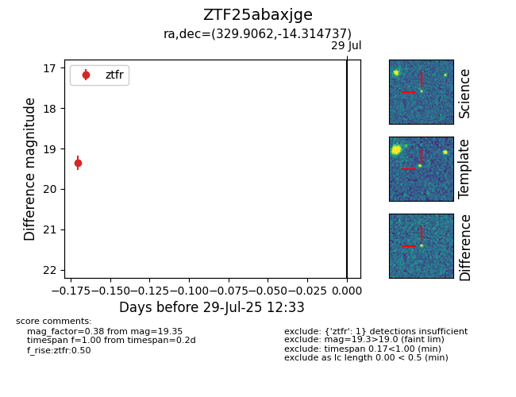

Target ZTF25abaxjge at 2025-07-29 12:33, see:
FINK: fink-portal.org/ZTF25abaxjge
Lasair: lasair-ztf.lsst.ac.uk/objects/ZTF25abaxjge
ALeRCE: alerce.online/object/ZTF25abaxjge
alt names
ZTF25abaxjge (ztf,fink)
coordinates:
equatorial (ra, dec) = (329.9062,-14.31474)
galactic (l, b) = (41.8266,-48.06536)
photometry
last ztfr=19.35
1 ztfr detections
